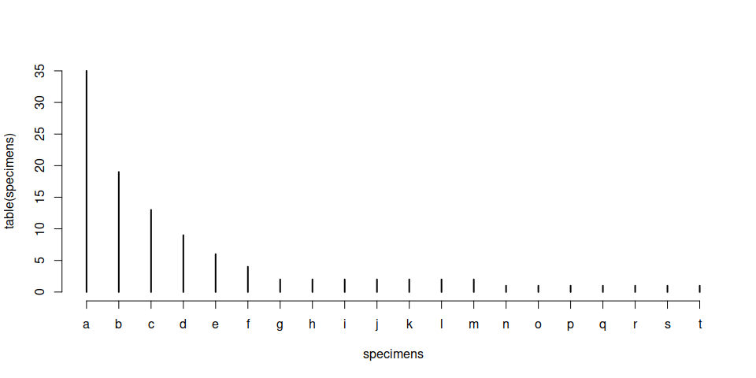

Add toc: true to the metadata of the .md file for a table of contents.
Introduction
- Database was designed for use in research in mind
- Here are some tutorials on how to use it:
More tutorials
Additional tutorials will be made available on the Evolv-ED + logo
Preparing data
Example R code chunks:
# counts of specimens
counts <- c(35,19,13,9,6,4,2,2,2,2,2,2,2,1,1,1,1,1,1,1)
counts
[1] 35 19 13 9 6 4 2 2 2 2 2 2 2 1 1 1 1 1 1 1
We can have a citation here: such as (Kocsis et al. 2019)
Subheading
Some more R code
# one letter that represents each species
species <- letters[1:length(counts)]
# extended format of the sample
specimens <- rep(species, counts)
Running the table() function confirms that the structure we created is
indeed matching the count data above.
table(specimens)
specimens
a b c d e f g h i j k l m n o p q r s t
35 19 13 9 6 4 2 2 2 2 2 2 2 1 1 1 1 1 1 1
To make the vector of specimens compatible with the subsample()
function, we have to make it a data.frame.
samp <- data.frame(specimens, stringsAsFactors=FALSE)
Subheading 2
An example plot
plot(table(specimens))

References
Kocsis, Ádám T., Carl J. Reddin, John Alroy, and Wolfgang Kiessling.
2019. “The R Package divDyn for Quantifying
Diversity Dynamics Using Fossil Sampling Data.” *Methods in Ecology and
Evolution* 10 (5): 735–43. <https://doi.org/10.1111/2041-210X.13161>.